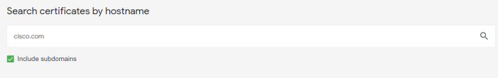
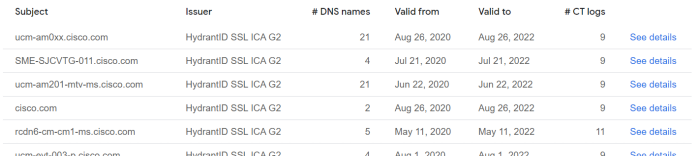
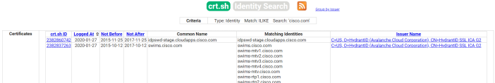

Certificate Transparency reports
Certificate Transparency reports
Certificate Transparency reports offer a penetration tester an additional method for discoveringhosts and subdomains within a domain. This includes "hidden" virtual hosts that are not linked publicly, but have been issued an x.509 cert
Discover x.509 certs associated with each domain and discover "hidden" virtual hosts, to do that use:
◇
https://transparencyreport.google.com/https/certificates   ◇
https://crt.sh (BETTER, more results)
 ◇
firefox